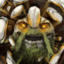

Tiny
Who is Pudge in Dota 2? Daun?...
Who is Pudge in Dota 2?
Pudge is a grotesque, hulking butcher who revels in slaughter and carnage. He was once a man who delved too deeply into forbidden knowledge and dark practices, becoming a monstrous figure obsessed with flesh and death. His grotesque appearance is a result of his self-experimentation and unnatural rituals. He roams the battlefield searching for fresh meat, delighting in ripping his enemies apart with his hooks and cleavers.
Gameplay Overview:
Primary Attribute:
Strenght and just being the unbeatable character in the game
Attack Type: Melee
Roles: Carry, carry, and carry only
Tiny is known for his explosive burst damage, especially early in the game. He can jump into a fight, stun and toss enemies, and eliminate squishy targets in seconds. Later in the game, he becomes a tower-destroying machine, capable of wiping out structures and entire teams with the right items.
- Avalanche
Tiny causes rocks to rain down in a small area, damaging and stunning enemies. It’s great for locking enemies down and works best when combined with Toss.
.jpg)
- Toss
Tiny throws the nearest unit (enemy or ally) toward a target location. If it hits an enemy, it deals area damage. Toss can be used to:
Throw enemies into danger
Toss allies to safety Combo with Avalanche for massive burst damage

- Tree Grab / Tree Volley (upgrades)
Tiny can grab a tree to use as a weapon, giving him cleave damage and increasing his attack range. With special items, he can throw trees at enemies from a distance in an attack called Tree Volley.

- Grow (Ultimate Ability)
As Tiny levels up his ultimate, he physically grows, gaining:
More attack damage
More armor
Higher toss damage
But he also loses a bit of attack speed. This ability visually changes him too — he becomes a giant.

Tiny's Story (Lore)
Tiny’s origins are unknown — even to himself. He doesn’t remember where he came from. Maybe he was once part of a golem, or a sculpted statue, or even just a random chunk of rock that somehow became alive.
What makes Tiny unique is that he grows — not through age or experience alone, but through movement. As he travels across the world, his body gathers more mass. Dirt, gravel, and stone accumulate around him, causing him to grow larger and stronger. Where other rocks erode and crumble over time, Tiny becomes bigger and tougher.
But this strange growth raises deep questions for him:
Why is he growing?
What is he turning into?
Will he ever stop?
Despite his simple speech and slow, heavy movements, Tiny is thoughtful. He wonders about his place in the world and what he’s meant to become. He doesn’t search for answers through books or study — he searches through battle, by moving forward, breaking things, and learning from what he experiences.
In a world filled with gods, sorcerers, and mythical creatures, Tiny represents something elemental — a piece of the Earth itself, learning what it means to exist.